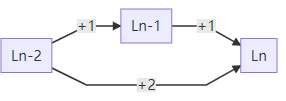

Dynamic Programming
Dynamic programming is a math method for some special problems1,for any $n$ ,the problem can be reduce to sub problems recursively.the Fibonacci is a typical DP problem:
$$ fib(n) = fib(n-1) + fib(n-2) $$
For a positive integer $n$ the result $fib(n)$ can be parted into two sub problems $fib(n-1)$ and $fib(n-2)$; for $n=0,1$ the result is 1 :
fib n
| (n == 0) = a
| (n == 1) = b
| otherwise = fib (n - 1) + fib (n - 2)
where a = 1; b = 1
or a more complex version:
fibs = 1 : 1 : zipWith (+) fibs (tail fibs) -- zipWith (x:xs) xs
1. A simple example
Suppose we have a ladder with $n$ steps, you can climb up one or two steps at one time, then how many method to reach the top of the ladder?2

graph LR
start[Ln-2]
start-- +1 --> step_m[Ln-1]
step_m -- +1 -->stop
start-- +2 --> stop[Ln]
This problem has lots of similar version, one of them is : we have a string with $n$ 1s:‘111…1’, give a encoding method, $a$ denotes ‘1’ and $b$ denotes ‘11’, find the methods to encode this string.
$$
S_n=\underbrace{1…1}\\
\qquad;n\\
Encode(S_n)=\begin{cases}
a…,\quad'1’ \quad concat\quad Encode(S_{n-1})\\
b…,\quad'11’\quad concat\quad Encode(S_{n-2})\
\end{cases}
$$
The key to solve these problems are decompose the original $n$-th problem into sub-problems, for the first one, we denote the solution for $n$ as $L(n)$. if we stand at the $n$-th step of the ladder, we can only access there from $n-2$-th by climb 2 steps or $n-1$-th by climb 1 step; So we get $L(n) = L(n-1)+L(n-2)$, some thing looks familiar? yes, that is just a Fibonacci function!
Obviously,The second problem is also a Fibonacci.
2 Generate Permutations
In this part ,we want to generate all permutation for a positive integer $n$,not just getting the number of permutations:
$$P_n=n!$$
First, suppose we already get the solution for $n-1$ permutations $Perm(n-1)$ ,we can just insert the $n$ into all possible position to generate the $n$ permutations, for example:
$$ \begin{align} Perm(2)&=[[1,2],[2,1]]\\ Perm(3)&=\begin{cases} insert\space ‘3’\space into\space[1,2]=>[[3,1,2],[1,3,2],[1,2,3]]\\ insert\space ‘3’\space into\space[2,1]=>[[3,2,1],[2,3,1],[2,1,3]]\\ \end{cases}\\ &finally,\\ Perm(3)&=[[3,1,2],[1,3,2],[1,2,3]] + [[3,2,1],[2,3,1],[2,1,3]] \end{align} $$ So $Perm(n)$ can be decomposed by inserting $n$ for all $Perm(n-1)$’s children.Here we can also checking the number of permutations, given the number of $Perm(n-1)$ is $P_{n-1}=(n-1)!$, for each child we can insert $n$ at n positions(head or after $n-1$ numbers),so $P_n = n\cdot P_{n-1} = n!$,it’s the first equation of this part.
Haskell implement as following:
import Data.List hiding (permutations)
insert_loop x [] = [[x]]
insert_loop x (x':xs) = (x:x':xs):[x':xs'|xs'<-insert_loop x xs]
permutation [] = [[]]
permutation (x:xs) = concat [insert_loop x perm|perm <- permutation xs]
2 Sum of combinations
From math lectures in high school, we known this combination formula: $$ \sum_{i=0}^n C_n^i = 2^n, n >=1\quad\quad(1) $$ here is a simple prove: $$ \because C_{n+1}^i(Choose\space i\space items\space from\space n \space items) = \begin{cases} C_n^{i-1} (Choose\space i-1\space items\space from \space first\space n\space items,then\space append\space the\space last\space one)\\ C_n^{i}(Choose\space i\space items\space from \space first\space n\space items)\\ \end{cases}\\ \\ \therefore C_{n+1}^i=C_{n}^i+C_{n}^{i-1}\quad \quad(2)\\ for\space n=1,the\space formula(1)\space is\space obvious.\\ suppose\space the\space formula(1)\space is\space right\space for\space n:\sum_{i=0}^{n}C_{n}^i+C_n^{n+1}=2^n;\\ we\space check\space the\space n+1:\\ \sum_{i=0}^{n+1} C_{n+1}^{i} = \sum_{i=0}^{n+1}(C_{n}^i+C_{n}^{i-1}) =\sum_{i=0}^{n+1}C_{n}^i +\sum_{i=0}^{n+1}C_{n}^{i-1}\\ for\space the\space first\space part\space above,\sum_{i=0}^{n+1}C_{n}^i=\sum_{i=0}^{n}C_{n}^i+C_n^{n+1}=2^n\\ for\space the \space second\space part,let \space j = i-1(j=0…n),we\space get:\\ \sum_{i=0}^{n+1}C_{n}^{i-1}=\sum_{i=1}^{n+1}C_{n}^{i-1}=\sum_{j=0}^{n}C_{n}^{j}=2^n\\ \therefore \sum_{i=0}^{n+1} C_{n+1}^{i}=2^n+2^n=2^{n+1}\\ \blacksquare QED. $$